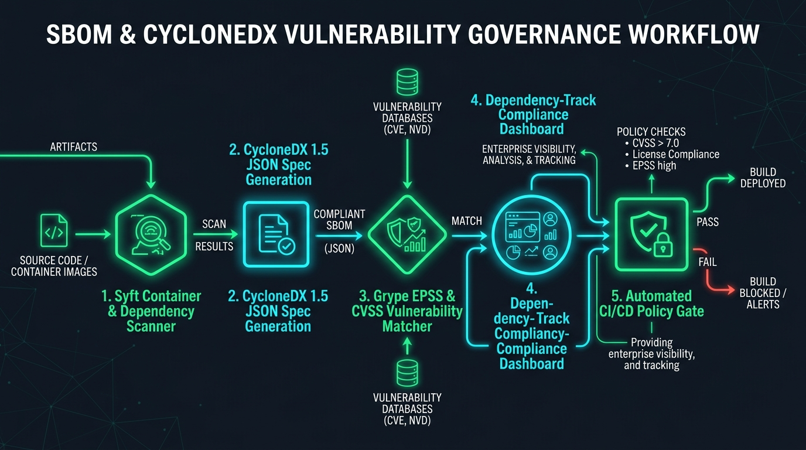

Automated Syft CycloneDX generation, Grype EPSS vulnerability gating & compliance
Generate CycloneDX and SPDX Software Bill of Materials (SBOM) using Syft, enforce Grype vulnerability gates with EPSS scoring, and verify licensing compliance.
Security Telemetry & Compiled Blueprint
SBOM Specification
CycloneDX 1.5 JSON
EPSS Threshold Gate
EPSS < 0.05
Critical CVE Tolerance
0 Critical / 0 High
apiVersion: governance.cyclonedx.org/v1
kind: SBOMAuditPolicy
metadata:
name: cyclonedx-governance
spec:
specVersion: "1.5"
formats: ["cyclonedx-json", "spdx-json"]
scanner:
engine: "syft"
vulnerabilityMatcher: "grype"
epssThreshold: 0.05
maxCvssScore: 7.0
failOnSeverity: ["CRITICAL", "HIGH"]
SBOM & CycloneDX Vulnerability Governance Studio Enterprise Topology

Overview & Architectural Superiority
Generate CycloneDX and SPDX Software Bill of Materials (SBOM) using Syft, enforce Grype vulnerability gates with EPSS scoring, and verify licensing compliance.
Enterprise Production Scenarios
- Cryptographic Verification: Prevent tampering in CI/CD pipeline artifact creation and deployment.
- Automated Gating: Enforce zero-tolerance security rules before artifacts schedule onto Kubernetes clusters.
- Zero Bastions / Zero Static Keys: Ephemeral, identity-based sessions verified against immutable transparency ledgers.
Infrastructure & Software Technology Stack
SBOM Generation
- • Anchore Syft 1.10+
- • CycloneDX 1.5 JSON
- • SPDX 2.3 Tag-Value
Vulnerability Matcher
- • Anchore Grype 0.79+
- • FIRST.org EPSS API v2
- • NIST National Vulnerability DB
Governance & Ingestion
- • OWASP Dependency-Track
- • SPDX License Classifier
- • GitHub SARIF Tab